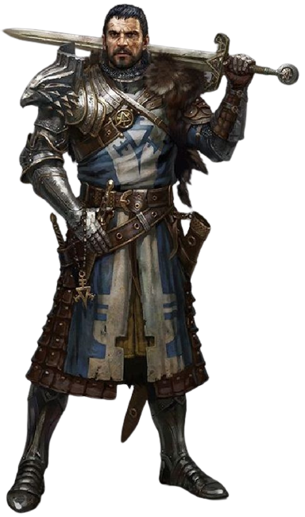

Indo a favor de suas próprias estatísticas, seguir seus instintos guerreiros deram certo.
Seguir em silêncio sem chamar qualquer tipo de atenção parecia estar dando certo. Porém um novo dilema,
como em uma boa aventura, mais uma vez assombrava o nosso personagem principal.
Um clarão de luz surgia em um canto da caverna,
onde dois caminhos se mostravam possíveis: Subir uma corda pendurada em uma porção alta da caverna,
onde parecia dar em um lugar ainda mais escuro, ou descer uma ribanceira para onde seguia aquele clarão misterioso.
Novamente em uma situação desconhecida, o que o héroi deve fazer?